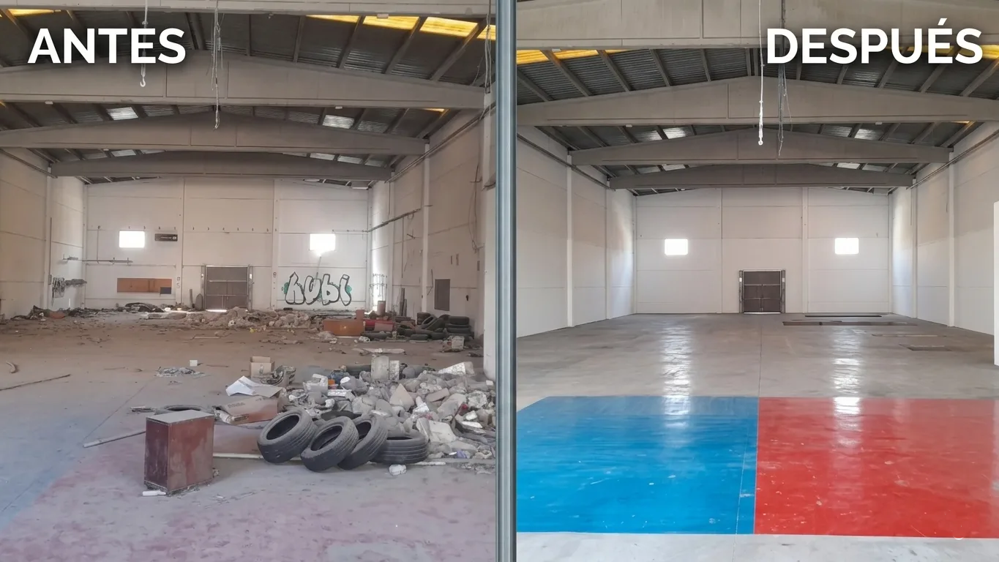
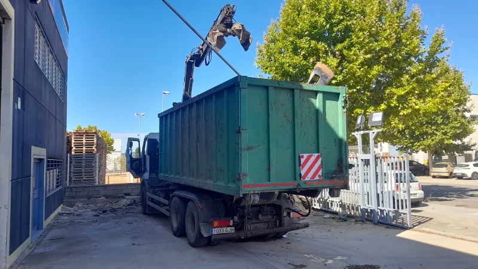
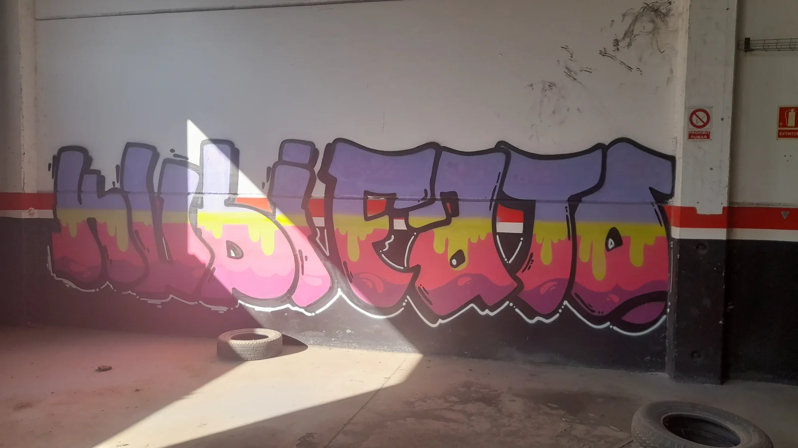

Què és el buidatge d'una nau industrial i quan es necessita?
El buidatge d'una nau industrial consisteix a retirar tot el contingut d'un espai d'ús industrial o comercial: maquinària, prestatgeries, palets, materials, eines, vehicles, mobiliari d'oficina i qualsevol residu acumulat. És una operació diferent del buidatge d'un pis perquè els volums són més grans, els materials més variats i la normativa de gestió de residus més estricta.
Es necessita quan una empresa tanca o es trasllada, quan un propietari vol llogar o vendre la nau, quan hi ha una liquidació d'actius, quan s'hereta una nau amb contingut o quan l'activitat ha cessat i l'espai porta temps sense ús.

L'Agència de Residus de Catalunya (ARC) exigeix que els residus industrials especials siguin gestionats únicament per empreses autoritzades. No fer-ho pot comportar sancions de fins a 300.000€.
Tipus de naus i què implica cadascuna
No totes les naus són iguals. El tipus d'activitat que es realitzava a la nau determina directament el cost i la complexitat del buidatge:
Naus de magatzem logístic
Són les més senzilles. Solen contenir prestatgeries metàl·liques, palets, carretons elevadors i mercaderia. El buidatge és relativament ràpid i els materials tenen sortida en el mercat de segona mà. Moltes vegades el valor de les prestatgeries i la maquinària pot compensar parcial o totalment el cost del buidatge.
Naus de taller o fabricació
Més complexes. Poden contenir torns, fresadores, premses, compressors, dipòsits de fluids o olis. Alguns d'aquests elements són residus perillosos i requereixen gestió especialitzada amb empresa registrada a l'ARC.
Naus amb oficines integrades
Combinen zona industrial amb zona d'oficines. Requereixen buidar tant el contingut industrial com el mobiliari d'oficina, arxius, equips informàtics i estris domèstics de zones habilitades com a menjador o vestuari.
Naus agrícoles o antigues
Freqüents a la comarca del Garraf i el Penedès. Poden contenir maquinària agrícola obsoleta, dipòsits de productes fitosanitaris (residu perillós), fusta i materials de construcció. L'antiguitat pot implicar també la presència d'amiant, que requereix empresa especialitzada amb certificació RERA.
Si la seva nau es va construir abans de 2002, és obligatori fer una inspecció d'amiant abans de qualsevol obra o enderroc. La retirada només pot realitzar-la una empresa inscrita en el Registre d'Empreses amb Risc d'Amiant (RERA).
Quant costa buidar una nau industrial a Barcelona? Preus 2026
El preu del buidatge d'una nau industrial depèn de cinc factors principals: superfície, alçada lliure, tipus i volum de contingut, accés per a camions i necessitat de gestió de residus especials. A continuació els rangs de preu més habituals a l'àrea metropolitana de Barcelona el 2026:
| Tipus de nau | Superfície aprox. | Preu estimat | Termini |
|---|---|---|---|
| Nau petita – magatzem lleuger | 100–300 m² | 800€ – 2.500€ | 1 dia |
| Nau mitjana – taller o logística | 300–700 m² | 2.500€ – 5.000€ | 2–3 dies |
| Nau gran – indústria o magatzem | 700–2.000 m² | 5.000€ – 12.000€ | 3–7 dies |
| Nau molt gran o complexa | +2.000 m² | Pressupost a mida | +1 setmana |
* Preus orientatius per a l'àrea metropolitana de Barcelona. El cost final pot variar segons el contingut, la necessitat de gestió de residus especials i l'accés a la nau.
Sabia que el buidatge pot sortir més barat del que s'esperava?
Si la nau conté prestatgeries metàl·liques, maquinària en bon estat, carretons elevadors o palets en grans quantitats, el valor de revenda d'aquests materials pot reduir significativament el cost del buidatge. En alguns casos, el valor recuperat cobreix el 100% del servei. Sol·liciti una valoració gratuïta per conèixer el seu cas concret.
Com es realitza el buidatge d'una nau industrial pas a pas
Un buidatge professional de nau industrial segueix sempre el mateix procés per garantir seguretat, legalitat i eficiència:
- Visita d'inspecció i pressupost Abans de començar, un tècnic visita la nau per avaluar el contingut, l'accés, els riscos i elaborar un pressupost detallat i tancat. Aquesta visita és gratuïta i sense compromís.
- Inventari i classificació de materials Es classifiquen els materials segons el seu destí: venda, donació, reciclatge, residu ordinari o residu especial/perillós. Això determina la logística del buidatge.
- Coordinació de la gestió de residus Es contracten els gestors autoritzats per als residus especials. Es preparen els documents de seguiment de residus (DS) exigits per la normativa catalana.
- Buidatge i càrrega L'equip de treball retira els materials de manera ordenada. Primer els elements de major valor o que requereixen desmuntatge tècnic, després la resta. S'utilitzen transpalets, carretons i, si cal, maquinària d'elevació.
- Transport i destinació final Els materials es porten a la seva destinació: planta de reciclatge, deixalleria industrial, gestor autoritzat o comprador de segona mà.
- Neteja final Un cop buidada, es realitza una neteja bàsica de l'espai per deixar-lo llest per a la seva nova funció. Si es requereix neteja industrial profunda, es pressuposta a part.
- Lliurament de documentació Es lliura tota la documentació de gestió de residus (albars, documents de seguiment) necessària per acreditar la correcta gestió davant l'administració.

Necessita buidar una nau industrial a Barcelona o la comarca del Garraf?
Li fem una valoració gratuïta en menys de 24 hores. Pressupost tancat, sense sorpreses.
Gestió de residus industrials: què ha de saber
Aquest és el punt on més errors es cometen i on les conseqüències poden ser més greus. A Catalunya, la gestió de residus industrials està regulada per l'Agència de Residus de Catalunya i el Reial Decret 833/1988 sobre residus tòxics i perillosos.

Residus no perillosos
Inclouen mobiliari, fusta, metalls, plàstics, paper i cartró. Poden gestionar-se a través de recicladors convencionals o deixalleries municipals. Són els més senzills i barats de gestionar.
Residus perillosos
Requereixen empresa autoritzada inscrita en el Registre de Productors de Residus de Catalunya. Entre els més comuns en naus industrials:
- Olis minerals usats i lubricants
- Dissolvents, pintures i vernissos
- Bateries de plom i acumuladors
- Fluorescents i equips amb mercuri
- Envasos contaminats amb substàncies perilloses
- Filtres d'oli i draps impregnats
- Amiant (requereix empresa RERA certificada)
Barrejar residus perillosos amb ordinaris per estalviar en gestió és una infracció greu. Les multes van de 3.000€ a 300.000€ segons el tipus de residu i la quantitat. A més, el propietari de l'immoble pot ser considerat responsable subsidiari si contracta una empresa no autoritzada.
Zones industrials de Barcelona on treballem
Tenim experiència en el buidatge de naus als principals polígons industrials de Barcelona i la seva àrea metropolitana:
- Comarca del Garraf: Polígon Can Peric (Sant Pere de Ribes), Polígon Can Llong (Sitges), Polígon Industrial de Vilanova i la Geltrú
- Baix Llobregat: Polígon Fontsanta-Fatjó, Can Roses, Almeda, Pratenc
- Barcelonès: Zona Franca, Poblenou 22@, Can Batlló
- Vallès Occidental: Terrassa, Sabadell, Barberà del Vallès
- Baix Penedès i Camp de Tarragona: Tarragona, Polígon El Segre
Com triar l'empresa de buidatge de naus adequada
No totes les empreses que s'anuncien per a buidatge de naus tenen l'habilitació necessària per gestionar residus industrials. Abans de contractar, verifiqui aquests punts:
- Que l'empresa estigui inscrita com a transportista de residus en el Registre de l'ARC
- Que lliurin documentació de seguiment de residus (albars i DS)
- Que el pressupost sigui tancat i inclogui la gestió de residus
- Que tinguin assegurança de responsabilitat civil
- Que puguin aportar referències de buidatges industrials anteriors
- Que no subcontractin la gestió de residus perillosos sense informar-lo
Per a més criteris de selecció, consulteu la nostra guia Com triar una empresa de buidatge de confiança.
En què es diferencia el buidatge de nau del buidatge de pis?
Tot i que moltes empreses ofereixen ambdós serveis, les diferències són significatives:
| Aspecte | Buidatge de pis | Buidatge de nau industrial |
|---|---|---|
| Volum típic | 50–150 m³ | 200–5.000 m³ |
| Tipus de materials | Mobiliari, roba, estris | Maquinària, prestatgeries, residus industrials |
| Normativa aplicable | Residus urbans | Residus industrials (ARC, RERA) |
| Documentació necessària | Mínima | Documents de seguiment de residus |
| Personal necessari | 2–4 persones | 4–12+ persones, possible maquinària |
| Termini habitual | 1 dia | 1–7 dies |
Nosaltres realitzem ambdós tipus de buidatge. Si necessita buidar tant una nau com un habitatge associat (per exemple, en el cas d'una herència o tancament de negoci familiar), podem gestionar-ho tot amb un sol pressupost. Consulteu també la nostra guia sobre buidatge per defunció i liquidació d'herències.
Té una nau per buidar a Barcelona o la comarca del Garraf?
Visitem la nau, valorem el contingut i li lliurem un pressupost tancat en menys de 24 hores.
Preguntes freqüents sobre el buidatge de naus industrials
El preu varia entre 800€ i més de 12.000€ segons la mida, el tipus de contingut i la necessitat de gestió de residus especials. Una nau de magatzem de 200-300m² sol costar entre 800€ i 2.500€. Si la nau conté maquinària o prestatgeries amb valor, el preu net pot reduir-se considerablement. Sol·liciti valoració gratuïta per al seu cas concret.
Naus petites (100-300m²) poden buidar-se en 1 dia. Naus mitjanes (300-700m²) requereixen 2-3 dies. Per a naus grans o amb contingut complex, el procés pot durar entre 5 i 10 dies laborables. La planificació prèvia (inventari, coordinació de gestors de residus) pot afegir 2-5 dies a l'inici.
Depenent del seu estat i tipus, la maquinària pot vendre's al mercat de segona mà (reduint el cost del buidatge), donar-se, desballestar-se o gestionar-se com a residu industrial. Per a maquinària de gran mida o ancorada a terra pot ser necessari subcontractar desmuntatge especialitzat. Ho valorem durant la visita prèvia.
Generalment no necessita permisos especials per al buidatge en si. Sí és obligatori disposar de documents de seguiment de residus (DS) per a residus industrials especials o perillosos. La seva empresa de buidatge ha de gestionar-los. En el cas d'enderroc parcial o retirada d'amiant, sí que es necessiten autoritzacions administratives prèvies.
Sí. Treballem a tota la província de Barcelona i a Tarragona. Tenim experiència als principals polígons del Garraf, Baix Llobregat, Barcelonès, Vallès Occidental i Baix Penedès. Per a zones més allunyades, consulteu disponibilitat i possible suplement de desplaçament.
En casos on la nau conté maquinària, prestatgeries, carretons o materials amb valor de mercat rellevant, el valor recuperat pot cobrir total o parcialment el cost del servei. És menys freqüent que en habitatges, però passa. Ho determinem en la visita gratuïta prèvia. Consulteu també la nostra guia sobre quan el buidatge pot ser gratuït.